CADTestBench is the first test-based benchmark for Text-to-CAD, based on CADTests, executable software tests operating directly on the CAD Model (B-Rep) that verify whether a generated CAD model satisfies the geometric and topological requirements of the input prompt.
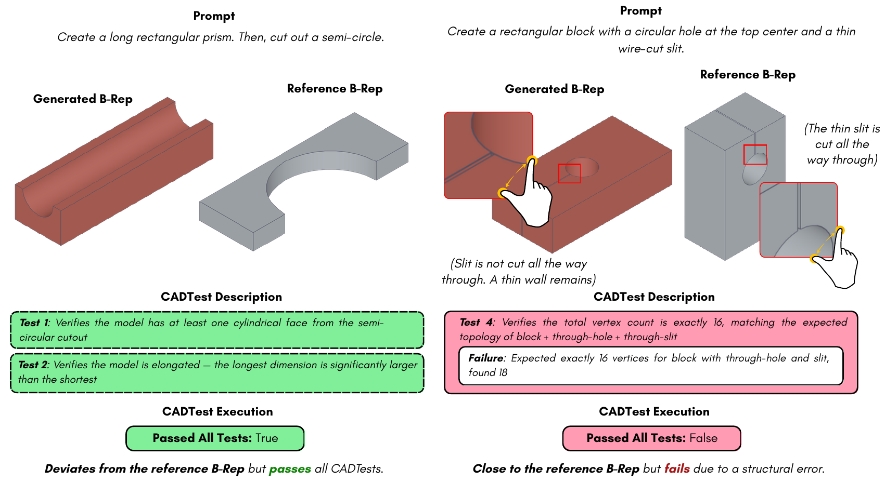
CADTests can account for ambiguous design prompts (left) and identify subtle structural errors (right).
Text-to-CAD has emerged as an important task with the potential to substantially accelerate design workflows. Despite its significance, there has been surprisingly little work on Text-to-CAD evaluation, and assessing CAD model generation performance remains a considerable challenge. In this work, we introduce a new evaluation perspective for Text-to-CAD based on automated testing. We propose CADTestBench, the first test-based benchmark for Text-to-CAD, based on CADTests, executable software tests that verify whether a generated CAD model satisfies the geometric and topological requirements of the input prompt. Using CADTestBench, we conduct comprehensive benchmarking of recent Text-to-CAD methods and further demonstrate that CADTests can also guide CAD model generation, yielding simple baselines that surpass performance of current methods. The CADTestBench dataset and code are publicly available.
Assess prompt compliance directly, rather than via alignment with a ground-truth solution.
Every dimension and structural specification is treated as a strict constraint.
Failing tests return explicit log messages describing the cause of failure.
Fast and deterministic, avoiding the inference costs of learnable semantic evaluators.
Handle invalid generations without aggregating scores on method-specific subsets.
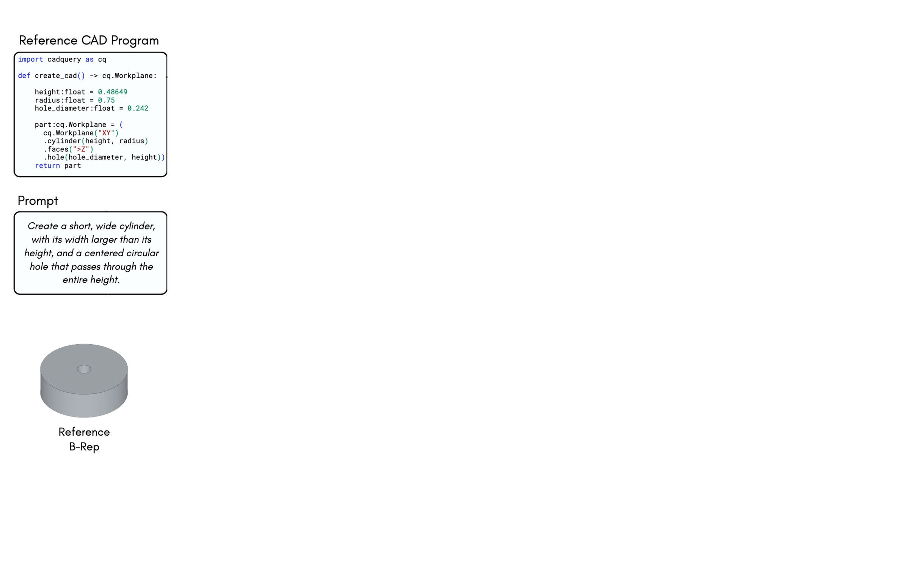
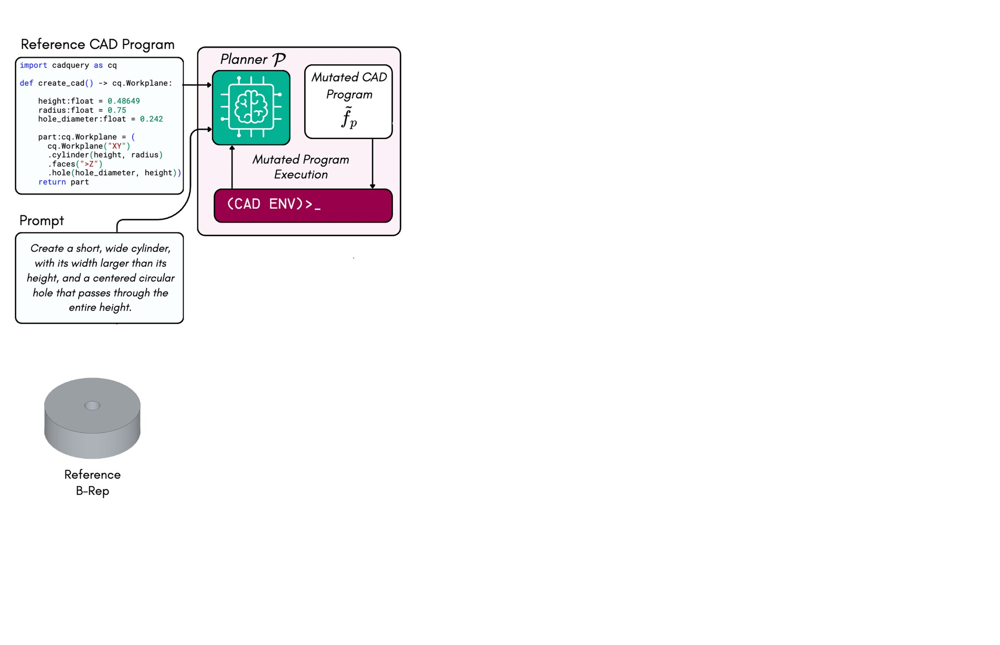
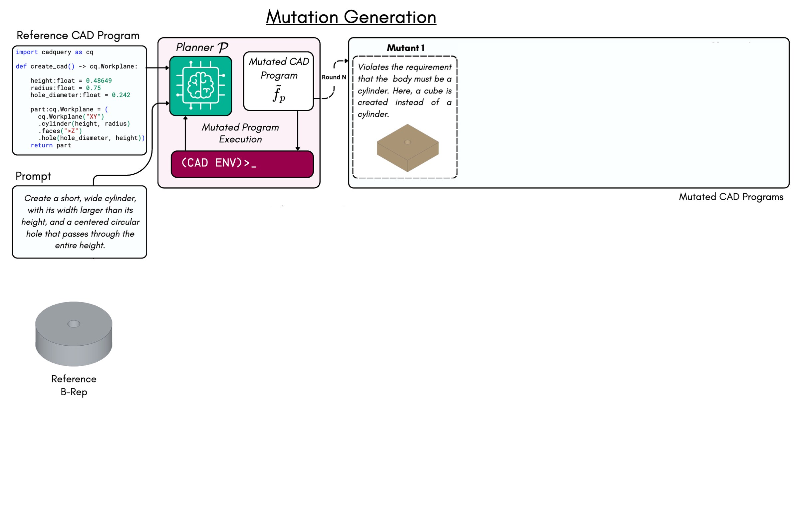
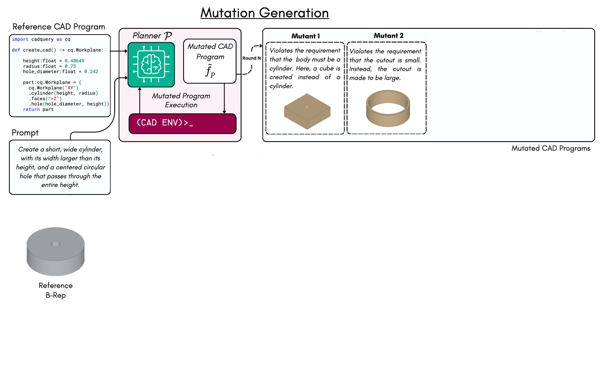
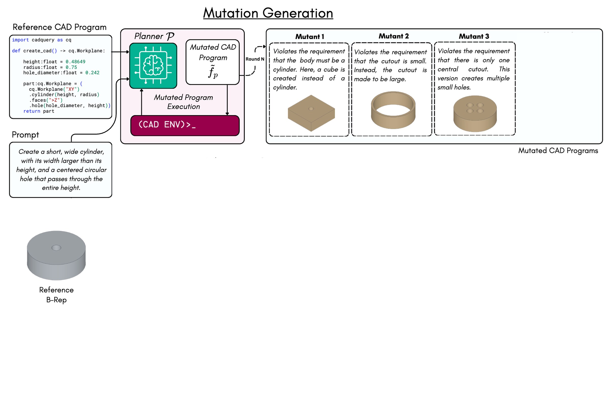
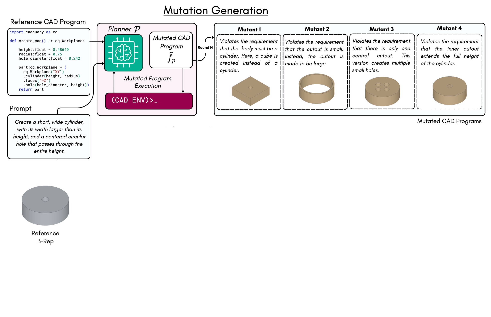
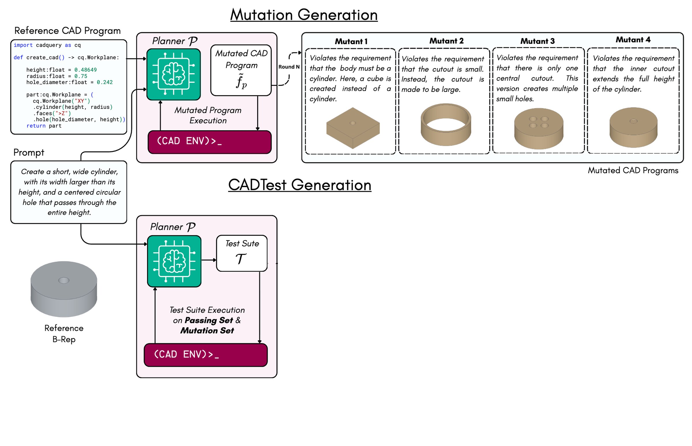
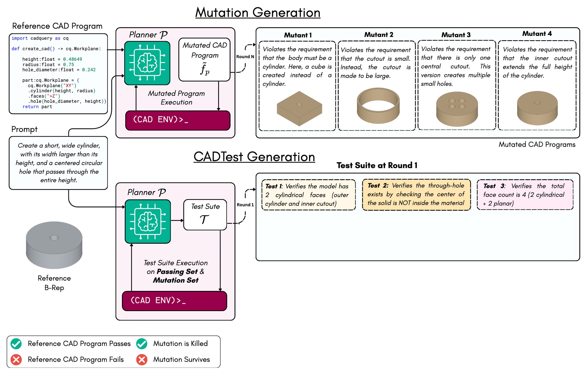
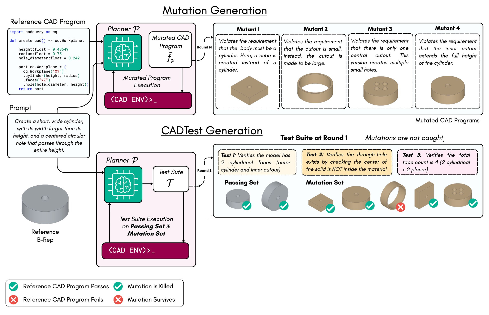
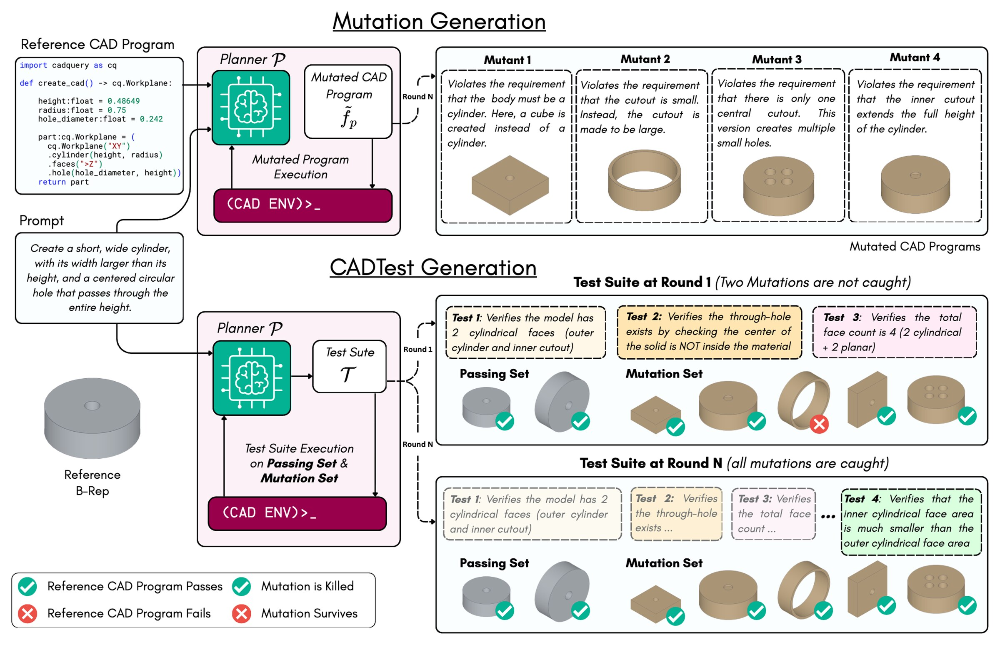
Evaluation of Text-to-CAD methods on CADTestBench. Results are reported for both the abstract and detailed partitions. Text-to-CAD baselines are evaluated using different LLM planners. Performance is measured in terms of pass rate (PR), requirement score (RS), and invalidity rate (IR).
| Method | Planner | Detailed | Abstract | ||||
|---|---|---|---|---|---|---|---|
| IR ↓ | RS ↑ | PR ↑ | IR ↓ | RS ↑ | PR ↑ | ||
| Finetuned Method | |||||||
| Text2CAD | – | 0.005 | 0.405 | 0.025 | 0.015 | 0.603 | 0.085 |
| Train-Free Methods | |||||||
| CadCodeVerify | GPT-4.1 | 0.025 | 0.794 | 0.410 | 0.040 | 0.880 | 0.630 |
| 10-shots | GPT-5.2 | 0.175 | 0.718 | 0.465 | 0.210 | 0.742 | 0.580 |
| Skilled | GPT-5.2 | 0.190 | 0.688 | 0.430 | 0.180 | 0.766 | 0.600 |
| ReAct | DeepSeek-V3 | 0.035 | 0.752 | 0.370 | 0.005 | 0.821 | 0.390 |
| ReAct | Qwen3-Coder-480B | 0.025 | 0.793 | 0.425 | 0.010 | 0.881 | 0.605 |
| ReAct | GPT-5.2 | 0.000 | 0.835 | 0.480 | 0.005 | 0.916 | 0.695 |
| ReAct + Image | GPT-5.2 | 0.025 | 0.822 | 0.485 | 0.005 | 0.916 | 0.695 |
| 10-shots | Claude-4.6-Sonnet | 0.155 | 0.744 | 0.510 | 0.115 | 0.830 | 0.640 |
| Skilled | Claude-4.6-Sonnet | 0.185 | 0.727 | 0.505 | 0.130 | 0.810 | 0.640 |
| ReAct | Claude-4.6-Sonnet | 0.000 | 0.874 | 0.580 | 0.000 | 0.929 | 0.715 |
| Test-based Baselines | |||||||
| CADTests | GPT-5.2 | 0.020 | 0.824 | 0.500 | 0.015 | 0.925 | 0.720 |
| CADTests + Log | GPT-5.2 | 0.015 | 0.852 | 0.515 | 0.020 | 0.922 | 0.700 |
| CADTests | Claude-4.6-Sonnet | 0.005 | 0.882 | 0.590 | 0.000 | 0.953 | 0.765 |
| CADTests + Log | Claude-4.6-Sonnet | 0.000 | 0.897 | 0.625 | 0.000 | 0.962 | 0.810 |
Browse CADTestBench samples with their generated models, code and CADTests. It opens on the CADTests Claude-4.6-Sonnet run; pick another preloaded experiment and press Load to switch.
@inproceedings{mallis2026cadtests,
title={Text-to-CAD Evaluation with CADTests},
author={Dimitrios Mallis and Marco Wang and Ahmet Serdar Karadeniz and Elisa Ricci and Anis Kacem and Djamila Aouada},
booktitle={Advances in Neural Information Processing Systems (NeurIPS)},
year={2026}
}This work is supported by the National Research Fund (FNR), Luxembourg, under the BRIDGES2021/IS/16849599/FREE-3D project and the JUMP2025/19750191/Morfis project.